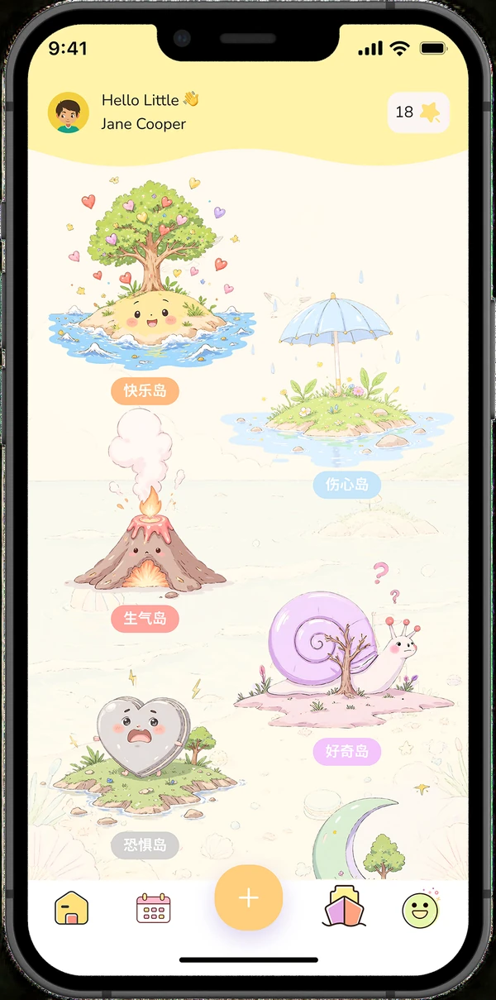
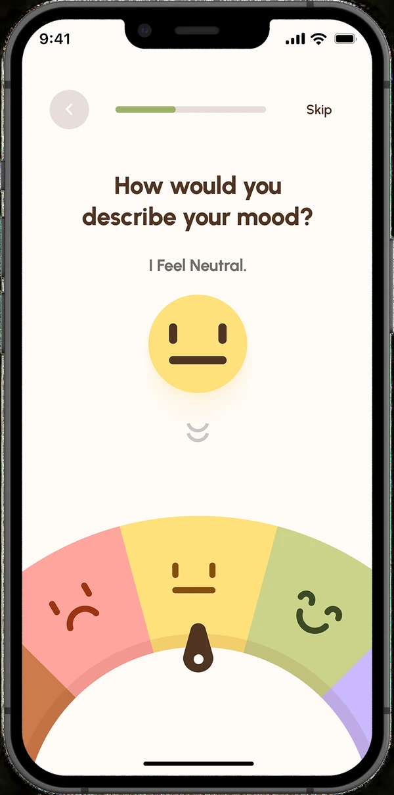
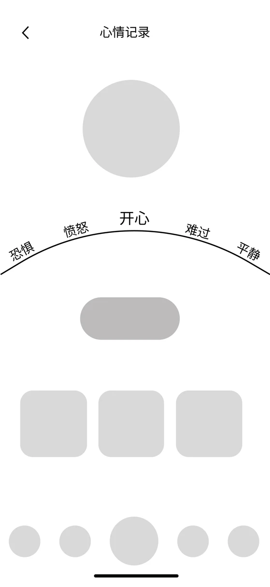
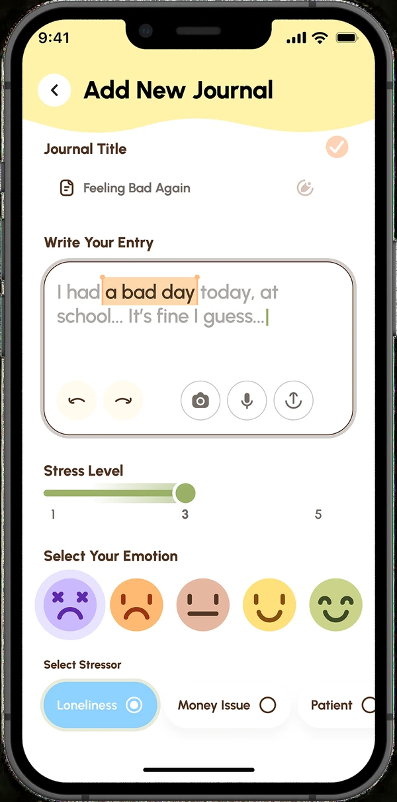
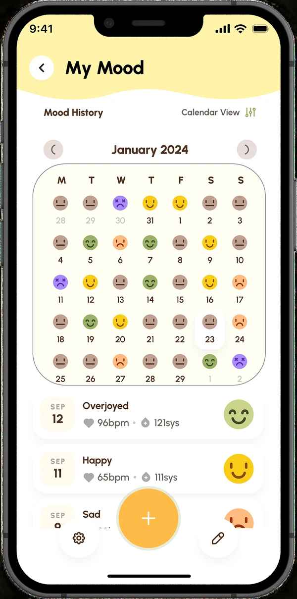
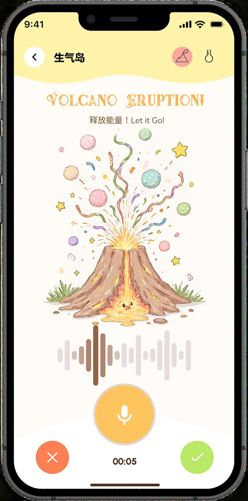
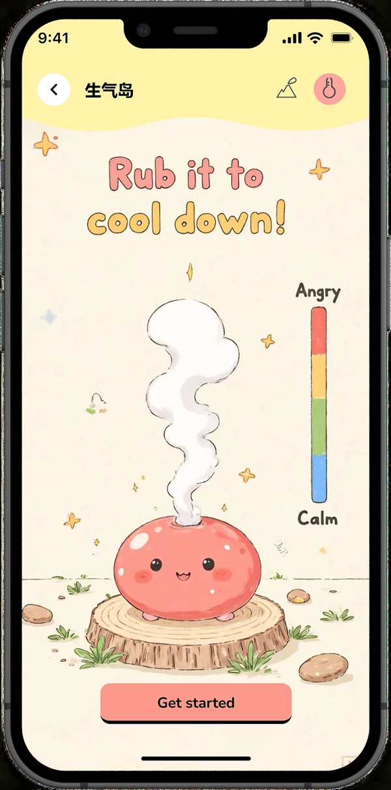
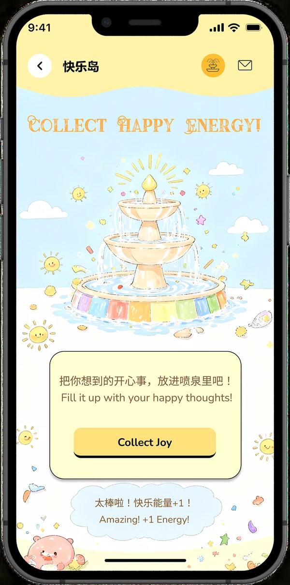
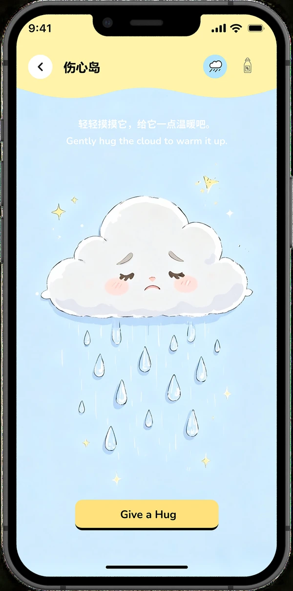
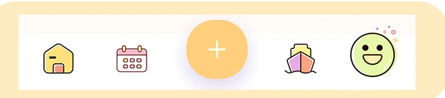

竞品观察
对比 5 个情绪日记、助眠和虚拟角色类产品。以 EMMO 为例，表情记录入口很轻，但面向儿童的后续表达引导较少。
01 / MOBILE PRODUCT DESIGN
当孩子还说不清心情，可以先选一个表情。


01 / DESIGN QUESTION
前期围绕 6–12 岁儿童和家长开展研究，回收 128 份问卷并分析 5 个竞品。研究让我把表达拆成两件小事：先用表情选出此刻的感受，再通过互动或日记继续表达。
了解儿童情绪表达习惯、记录意愿与家长关注点。
覆盖情绪记录、助眠陪伴与虚拟角色类产品。
表情低门槛输入、情绪岛屿导航、可跟随的降温互动。
对比 5 个情绪日记、助眠和虚拟角色类产品。以 EMMO 为例，表情记录入口很轻，但面向儿童的后续表达引导较少。
问卷、用户画像和旅程图显示：孩子在情绪上来时可能说不出原因，家长也需要知道当下能做什么。
记录页用表情和颜色降低开口门槛；生气岛把「冷静一下」拆成孩子可以跟着做的互动。
02 / RECORD & REVIEW
选择页用表情和颜色帮助孩子辨认感受，日记页提供补充文字的空间。月历是回看记录的界面，也沿用表情标记。



03 / INTERACTION DETAIL
生气岛用火山表现情绪强度，降温页把操作提示放在画面中心，并用强度刻度呈现变化，让孩子知道可以做什么、操作后会看到什么。


04 / ISLAND VARIATIONS
岛屿沿用顶部导航和底部操作区，用色彩、场景和互动提示区分不同的情绪主题。


05 / VISUAL SYSTEM


06 / PROJECT DEMO
项目展示视频收录了引导页、情绪岛屿、记录和回顾等界面。